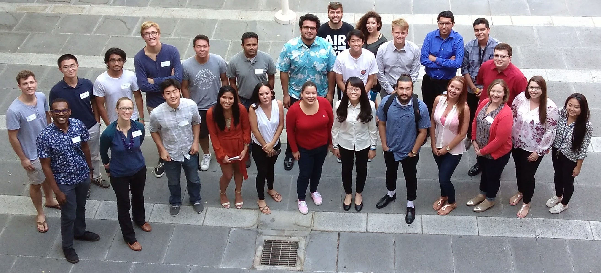
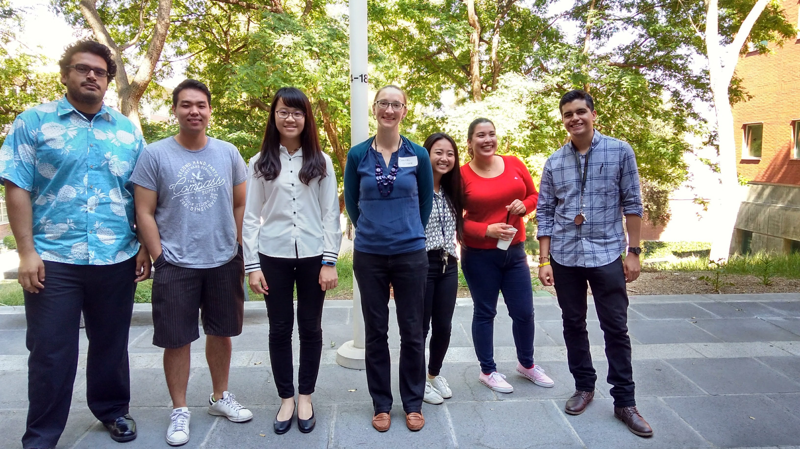
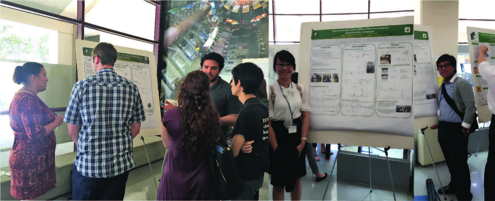
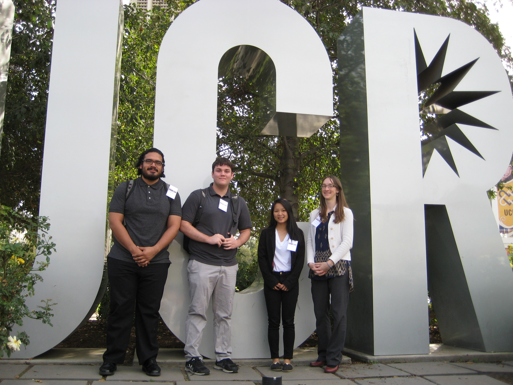
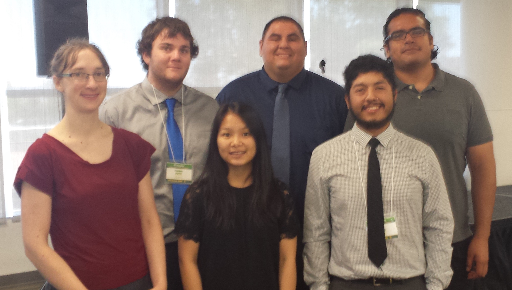
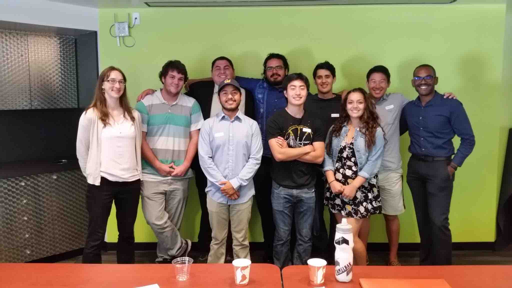
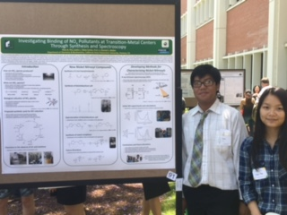
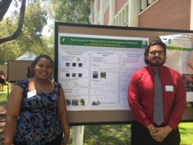
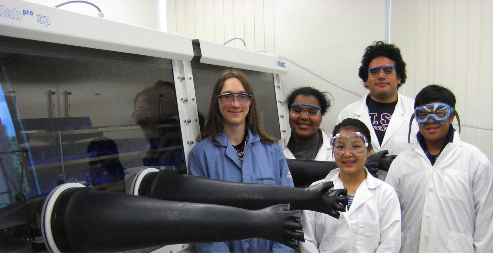

StieberLab Group Pictures
The second Pomona Undergraduate Inorganic Chemistry Symposium (2017) at Cal Poly Pomona with the Ball Group from Pomona College, the Fry-Petit Group from CSU Fullerton, and the John Group from Cal Poly Pomona.
(Most of) the Summer 2017 research team.
The group presents posters at the 2017 UC Irvine Undergraduate Research Conference.
The group presents posters and talks the 2016 Southern California Conferences for Undergraduate Research (SCCUR) at UC Riverside.
The group presents posters and talks at the 2016 Summer Research and Creative Activities (RSCA) Conference at Cal Poly Pomona.
The first Pomona Undergraduate Inorganic Chemistry Symposium (2016) at Cal Poly Pomona with the Ball Group from Pomona College.
 First group poster presentations at College of Science Research Day, Spring 2016.
The original group, Spring 2016.